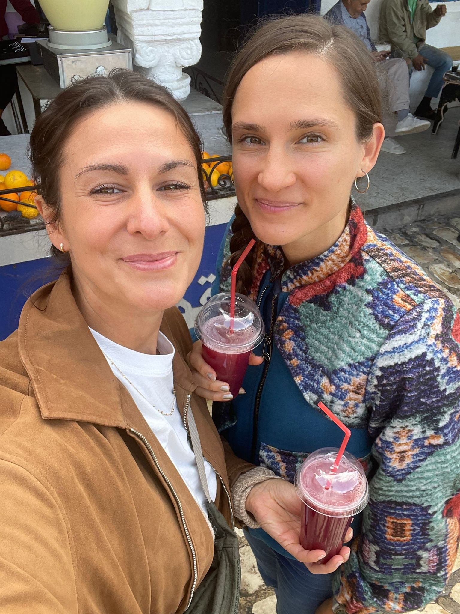
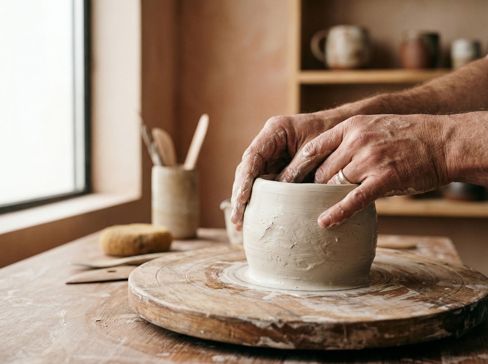
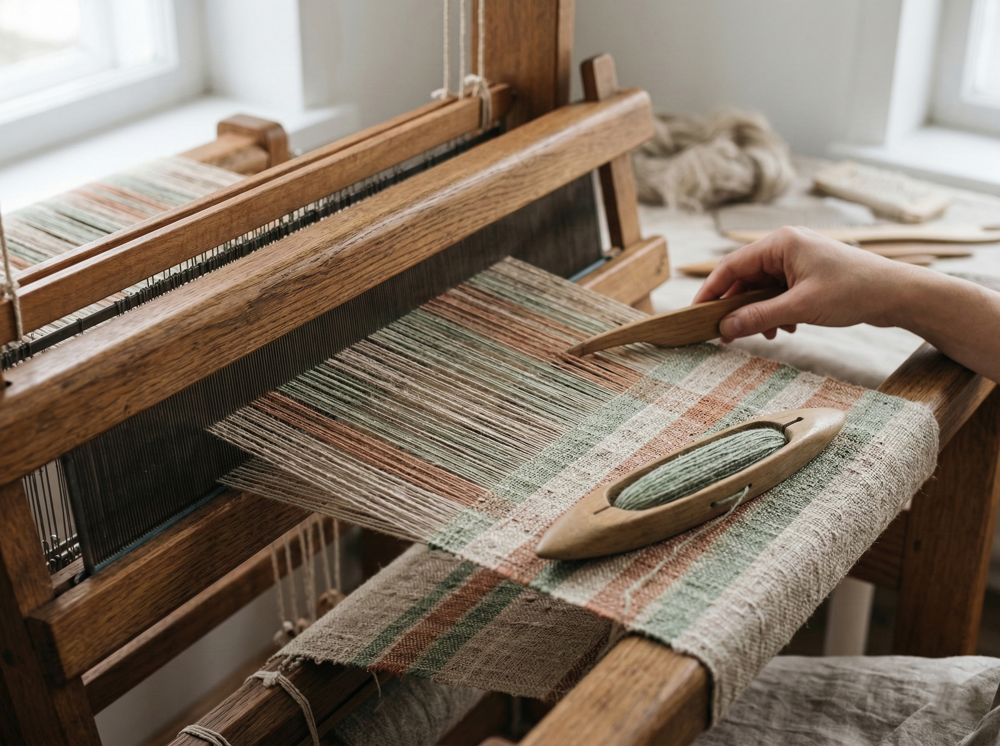
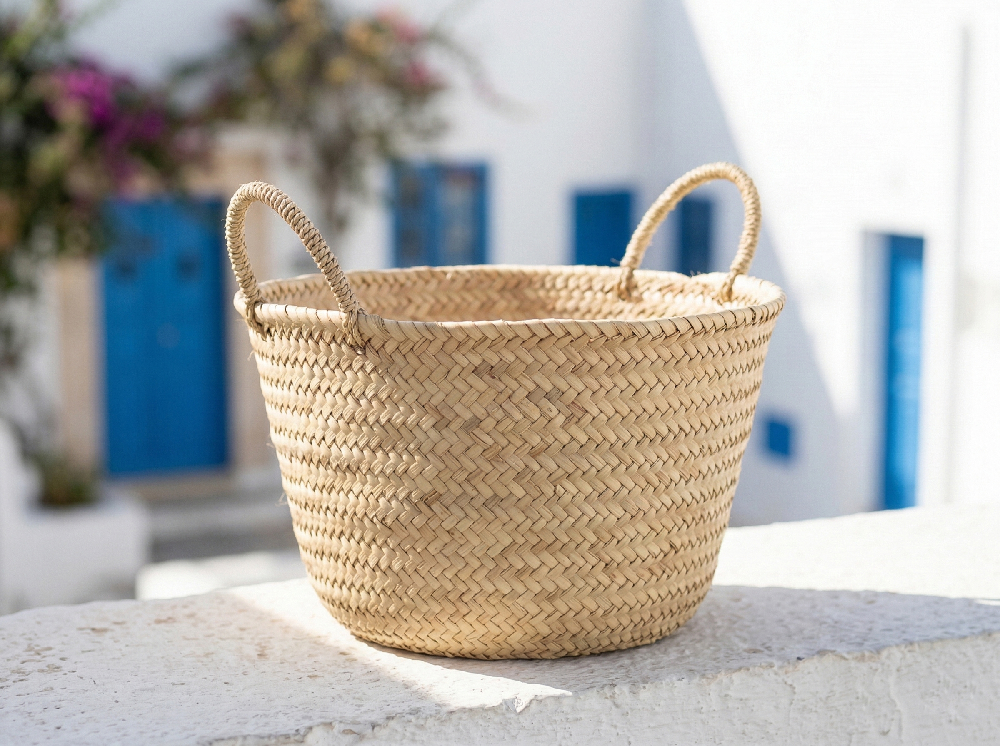
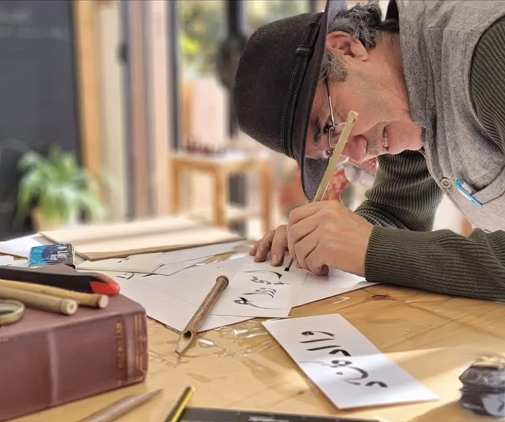

A creative weekend designed to help you slow down and step inside living craftsmanship in Tunis. While most travelers see souvenir shops and typical tourist spots, we open doors to something far more intimate.
Hey there! We’re Alice and Janina. Craft is the thread connecting what we do.
Since 2018, Janina has been hosting macramé and creative workshops across Germany, Belgium and Spain, bringing people together through their hands and imagination.
Alice has built direct relationships with more than 60 independent artisans across the Maghreb, helping preserve traditional crafts through her brand Faridique.
This project was born during a slow afternoon near the Sahara desert over a mint tea with one simple question: what if people could experience craftsmanship at its source - real atelier handwork, side by side with artisans.
So we created exactly that: The Creative Artisan Weekend. An intimate 4-day experience in Tunis, where you can learn directly from master artisans. Come and join us!
— Alice & Janina

Small adjustments to the schedule may occur to ensure the best possible experience for everyone.

15:00 - 21:00:
Welcome Dinner in a creative atmosphere in an authentic Tunesian Artist Studio.
Workshop: Dinner & Pottery Workshop with Sonia Ben Slimane.

09:30 - 12:00:
Ô L'Espace Créatif. Weaving Workshop in the boutique.
14:00 - 18:00:
SALON DE LA CRÉATION ARTISANALE 2026. Visit the biggest Artisan Fair Trade in the country and get introduced to selected artisans.

09:30 - 12:00:
L'Artisanerie. Bookbinding Workshop with Mohammed, one of the last bookbinders in Tunis.
14:00 - 16:00:
Medina Guided Tour by Yassine. Exploring the Medina from another point of view.

EL Space Social Innovation Hub. Basket Weaving Workshop in a stunning location in Sidi Bou Said and a walk through the beautiful quarter.
| Activity | Included | Not included |
|---|---|---|
| Dinner & Pottery Workshop | ✓ | |
| Weaving Workshop | ✓ | |
| Artisan Fair Entry | ✓ | |
| Bookbinding Workshop | ✓ | |
| Guided Walk in the Medina | ✓ | |
| Basket Workshop | ✓ | |
| Tunis Essentials Guide | ✓ | |
|
International Flights & Accommodation
ⓘ
Recommended accommodation
Dar Majoul (approx. €100 / 2 nights, Tunis Center) Dar El Médina (approx. €160 / 2 nights, Tunis Center) Dar El Kif – La Marsa (approx. €200 / 2 nights, La Marsa) Flights from Europe Direct flights are widely available from major European cities. Common options include Tunisair, Air France, and Lufthansa. |
✕ | |
| Travel insurance | ✕ | |
|
Local Transport
ⓘ
Local transport in Tunis
Getting around the city is easy and affordable. We recommend using InDrive, a reliable ride-hailing app widely used in Tunisia. Taxis are also plentiful and inexpensive throughout Tunis. |
✕ | |
|
Extra food and beverages
ⓘ
Food & local recommendations
Workshop participants receive a welcome guide with our favourite restaurants, bars, and cafés, plus a few helpful local tips and do’s & don’ts for your stay in Tunis. |
✕ |